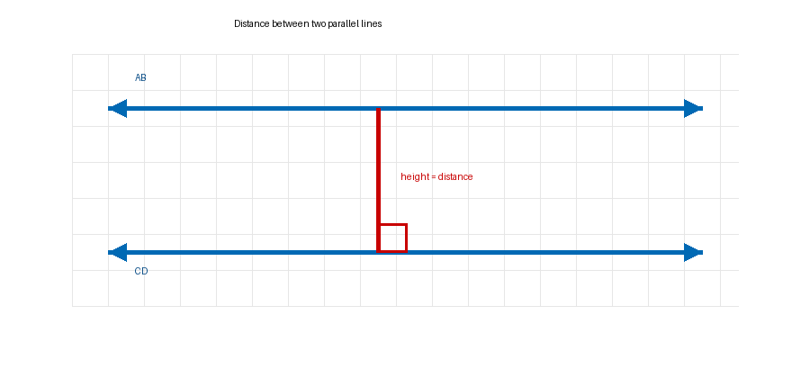
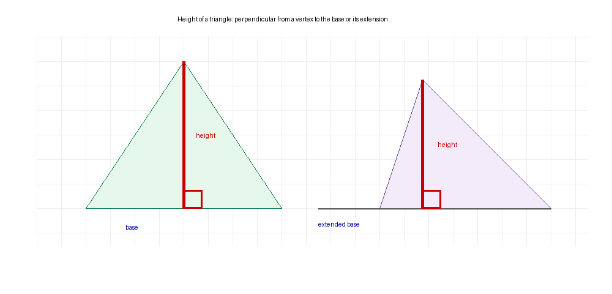
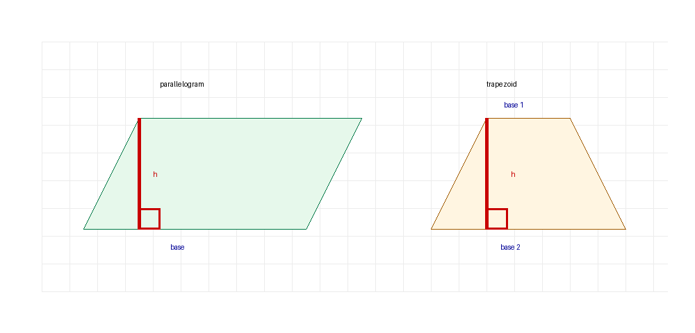

| البند | البيان | البند | البيان |
|---|---|---|---|
| المادة | الرياضيات | الصف | السادس الأساسي |
| الوحدة | السابعة: الهندسة | عنوان الدرس | الارتفاع في الأشكال الهندسية |
| عدد الحصص المقترح | 4 حصص × 45 دقيقة | المجال | الهندسة والقياس |
| مكان التنفيذ | غرفة الصف/مختبر الحاسوب/اللوح الذكي | نوع التحضير | تحضير محوسب مع ورقة عمل تفاعلية |
| المعلم : زهدي زاهدة | التاريخ: ............ |
فكرة الدرس المركزية
يبني الدرس فهماً بصرياً وعملياً لمعنى الارتفاع بوصفه البعد العمودي أو أقصر مسافة بين مستقيمين متوازيين، ثم ينقل هذا الفهم إلى المثلث ومتوازي الأضلاع وشبه المنحرف. يعتمد الدرس على الرسم على شبكة مربعات، وتمييز القاعدة والارتفاع، وتفسير لماذا لا تُعد القطعة المائلة ارتفاعاً.
 الارتفاع بين مستقيمين متوازيين |
 ارتفاع المثلث إلى القاعدة أو امتدادها |
 ارتفاع متوازي الأضلاع وشبه المنحرف |
|---|
الأهداف التعليمية السلوكية
• أن يوضح الطالب أن الارتفاع بين مستقيمين متوازيين هو البعد العمودي أو أقصر مسافة بينهما.
• أن يرسم الطالب ارتفاع مثلث من أحد رؤوسه إلى القاعدة المقابلة أو امتدادها مع وضع علامة الزاوية القائمة.
• أن يحدد الطالب القاعدة والارتفاع في متوازي الأضلاع المرسوم على شبكة مربعات.
• أن يحدد الطالب القاعدتين والارتفاع في شبه المنحرف المرسوم على شبكة مربعات.
• أن يرسم الطالب متوازي أضلاع أو شبه منحرف وفق معطيات عن طول القاعدة والارتفاع، ويبرر اختياره للارتفاع.
المفاهيم والمصطلحات والمهارات
| المحور | التفصيل |
|---|---|
| المفاهيم الجديدة/المؤكدة | الارتفاع، البعد بين مستقيمين متوازيين، القاعدة، ارتفاع المثلث، ارتفاع متوازي الأضلاع، ارتفاع شبه المنحرف، القاعدتان في شبه المنحرف، امتداد القاعدة. |
| التعلم القبلي | المستقيم والقطعة المستقيمة، المستقيمان المتوازيان، الزاوية القائمة، المثلث ومتوازي الأضلاع وشبه المنحرف، شبكة المربعات، وحدات الطول. |
| المهارات الرياضية | الرسم الدقيق، القياس، العد على شبكة مربعات، تسمية القطع بالرموز، التمييز بين العمودي والمائل، التبرير اللفظي. |
| القيم والاتجاهات | الدقة في الرسم، التعاون في العمل الثنائي، احترام حلول الزملاء، ربط الهندسة بمواقف حياتية مثل سارية العلم وتصميم الحدائق. |
خطة سير الحصص الأربع
| الحصة | محور الحصة | الإجراءات والزمن |
|---|---|---|
| الحصة الأولى | مفهوم الارتفاع والبعد بين مستقيمين متوازيين | 5 د: تمهيد بسارية العلم. 10 د: رسم أقصر مسافة بين مستقيمين متوازيين. 15 د: نشاط على شبكة مربعات: تسمية القطعة العمودية. 10 د: مناقشة الفرق بين القطعة العمودية والمائلة. 5 د: سؤال ختامي سريع. |
| الحصة الثانية | الارتفاع في المثلث | 5 د: مراجعة معنى العمودي. 15 د: رسم ارتفاع مثلث داخل الشكل. 15 د: رسم ارتفاع مثلث يقع على امتداد القاعدة. 5 د: تمييز القاعدة والارتفاع. 5 د: تذكرة خروج. |
| الحصة الثالثة | الارتفاع في متوازي الأضلاع | 5 د: مراجعة متوازي الأضلاع. 15 د: تحديد الضلعين المتوازيين والقاعدة. 15 د: رسم ارتفاعات مختلفة وقراءة طول القاعدة والارتفاع من الشبكة. 5 د: تصحيح جماعي. 5 د: واجب قصير. |
| الحصة الرابعة | الارتفاع في شبه المنحرف والتثبيت المحوسب | 5 د: مراجعة شبه المنحرف. 10 د: تحديد القاعدتين والارتفاع. 15 د: تنفيذ الورقة المحوسبة. 5 د: تحليل نتائج التصحيح الإلكتروني. 5 د: إغلاق وإثراء. |
نموذج التحضير وفق النمط المعتمد
| اليوم/التاريخ | الأهداف | المفاهيم الجديدة | التعلم القبلي | الأنشطة والتدريبات | التقويم | التغذية الراجعة |
|---|---|---|---|---|---|---|
| اليوم: ........ التاريخ: ........ |
أن يوضح الطالب أن الارتفاع بين مستقيمين متوازيين هو البعد العمودي أو أقصر مسافة بينهما. | ارتفاع، بعد بين مستقيمين متوازيين، عمودي، أقصر مسافة. | التوازي، الزاوية القائمة، استخدام المسطرة والقلم. | تمهيد بصورة سارية علم: ما نوع الزاوية بين السارية والأرض؟ ثم يعرض المعلم مستقيمين متوازيين على شبكة مربعات ويطلب من الطلبة رسم أقصر مسافة بينهما. | سؤال شفوي: لماذا لا تكون القطعة المائلة ارتفاعاً؟ أدخل طول الارتفاع من الشبكة. | إذا اختار الطالب قطعة مائلة، يطلب منه المعلم مقارنة أطوال عدة قطع بين المستقيمين ثم إبراز القطعة العمودية كأقصر مسافة. |
| اليوم: ........ التاريخ: ........ |
أن يرسم الطالب ارتفاع مثلث من أحد رؤوسه إلى القاعدة المقابلة أو امتدادها. | ارتفاع المثلث، القاعدة، امتداد القاعدة، زاوية قائمة. | أنواع المثلثات، الرأس، الضلع المقابل، العمود. | يعرض المعلم مثلثات مرسومة بين خطين متوازيين، ويطلب من الطلاب إكمال رسم الارتفاع بالمسطرة. يناقش حالات يقع فيها الارتفاع خارج المثلث على امتداد القاعدة. | ارسم ارتفاعاً لمثلث مع وضع علامة الزاوية القائمة، وسمِّ القاعدة. | إذا رسم الطالب منصفاً أو متوسطاً بدلاً من ارتفاع، يعاد السؤال: هل صنع الرسم زاوية قائمة مع القاعدة؟ |
| اليوم: ........ التاريخ: ........ |
أن يحدد الطالب القاعدة والارتفاع في متوازي الأضلاع المرسوم على شبكة مربعات. | ارتفاع متوازي الأضلاع، قاعدة، ضلعان متوازيان. | خصائص متوازي الأضلاع، قراءة الشبكة، التوازي. | يستخدم الطلاب الورقة المحوسبة أو شبكة ورقية: يلونون القاعدة باللون الأزرق والارتفاع باللون الأحمر، ثم يرسمون ارتفاعاً آخر بين الضلعين المتوازيين. | اكتب طول القاعدة وطول الارتفاع من شبكة معطاة. | تأكيد أن الارتفاع ليس طول الضلع المائل، بل المسافة العمودية بين الضلعين المتوازيين. |
| اليوم: ........ التاريخ: ........ |
أن يحدد الطالب القاعدتين والارتفاع في شبه المنحرف المرسوم على شبكة مربعات. | شبه منحرف، قاعدتان، ارتفاع شبه المنحرف. | تمييز شبه المنحرف، الضلعان المتوازيان، العد على الشبكة. | يعرض المعلم شبه منحرف على شبكة مربعات. يحدد الطلبة القاعدتين المتوازيتين، ثم يرسمون المسافة العمودية بينهما بوصفها ارتفاعاً. | أكمل: القاعدتان هما الضلعان ....، والارتفاع هو .... بينهما. | إذا اختلطت القاعدة بالساق، يعاد تمييز الضلعين المتوازيين أولاً قبل قياس الارتفاع. |
| اليوم: ........ التاريخ: ........ |
أن يرسم الطالب شكلاً يحقق معطيات القاعدة والارتفاع، وأن يبرر اختياره. | معطيات، قاعدة، ارتفاع، تحقق من الرسم. | قراءة المعطيات، استخدام المسطرة، التبرير. | تحدي ختامي: ارسم متوازي أضلاع طول قاعدته 7 وحدات وارتفاعه 3 وحدات. ثم نفذ ورقة العمل المحوسبة فردياً أو ثنائياً. | تذكرة خروج: ما الفرق بين الضلع المائل والارتفاع في متوازي الأضلاع؟ | تقديم تغذية راجعة فورية من الورقة المحوسبة، ثم علاج فردي للأسئلة التي ظهرت باللون الأحمر. |
استراتيجيات التدريس والوسائل
| البند | التفصيل |
|---|---|
| استراتيجيات التدريس | الحوار والمناقشة، التعلم التعاوني، الاستقصاء البصري، التعلم بالمحاكاة المحوسبة، حل المشكلات، التعلم القائم على الرسم والقياس. |
| الوسائل التعليمية | الكتاب المدرسي، السبورة، جهاز عرض/لوح ذكي، أجهزة حاسوب أو أجهزة لوحية، شبكة مربعات، مسطرة، أقلام ملونة، مقصوصات أشكال هندسية. |
| التقويم | تقويم قبلي بأسئلة شفوية، تقويم تكويني بالملاحظة وقائمة الرصد، تقويم ختامي بورقة العمل المحوسبة وتذكرة خروج، سلم تقدير عددي. |
| مراعاة الفروق الفردية | دعم: أشكال جاهزة مع ارتفاع مرسوم جزئياً. إثراء: رسم أكثر من ارتفاع للشكل نفسه، ورسم شكل يحقق معطيات مختلفة. |
المفاهيم الخاطئة والصعوبات المتوقعة وإجراءات علاجها
| الخطأ أو الصعوبة | إجراء علاجي مقترح |
|---|---|
| اعتبار أي قطعة تصل رأس المثلث بالقاعدة ارتفاعاً. | إلزام الطالب بوضع علامة الزاوية القائمة، واستخدام مثلث قائم/مسطرة للتحقق من العمودية. |
| الخلط بين طول الضلع المائل والارتفاع في متوازي الأضلاع. | تلوين الضلع المائل بلون والارتفاع بلون آخر، وبيان أن الارتفاع هو البعد العمودي بين ضلعين متوازيين. |
| عدم تمييز القاعدتين في شبه المنحرف. | تحديد الضلعين المتوازيين أولاً، ثم تسمية هذين الضلعين قاعدتين، وبعدها رسم الارتفاع بينهما. |
| رسم الارتفاع داخل المثلث فقط ورفض الارتفاع الواقع على امتداد القاعدة. | عرض مثلث منفرج وبيان أن الارتفاع قد يقع خارج الشكل إذا نزل عمودياً على امتداد القاعدة. |
| نسيان وحدة القياس عند قراءة طول الارتفاع. | كتابة وحدة طول في كل قياس: وحدة، سم، م، وعدم استخدام وحدة مربعة لأن الدرس يقيس أطوالاً لا مساحات. |
ورقة العمل المحوسبة
اسم الملف المرفق: ورقة_عمل_محوسبة_الارتفاع_في_الأشكال_الهندسية .html
| العنصر | التفصيل |
|---|---|
| نوع الورقة | HTML تفاعلية تعمل محلياً على المتصفح دون الحاجة إلى إنترنت. |
| أهدافها | تثبيت معنى الارتفاع، التمييز بين العمودي والمائل، رسم ارتفاع المثلث، تحديد القاعدة والارتفاع في متوازي الأضلاع وشبه المنحرف. |
| طريقة التنفيذ | يفتح المعلم الملف على اللوح الذكي في مرحلة الاستكشاف، ثم ينفذه الطلاب فردياً أو ثنائياً في مرحلة التقويم. |
| أدوات التقويم داخلها | أسئلة اختيار من متعدد، إدخالات رقمية، صح/خطأ، تحدي رسم لفظي، درجة نهائية، وتغذية راجعة فورية. |
أسئلة ورقة العمل المحوسبة ومفتاح الإجابة
| رقم | السؤال | الإجابة النموذجية |
|---|---|---|
| 1 | ما نوع الزاوية الناتجة من التقاء سارية العلم مع سطح الأرض؟ | زاوية قائمة |
| 2 | عرّف الارتفاع بين مستقيمين متوازيين. | البعد العمودي/أقصر مسافة بينهما |
| 3 | إذا كان البعد العمودي بين مستقيمين متوازيين يساوي 4 مربعات، فما الارتفاع؟ | 4 وحدات |
| 4 | من أين يُرسم ارتفاع المثلث؟ | من أحد الرؤوس إلى القاعدة المقابلة أو امتدادها عمودياً |
| 5 | صح/خطأ: كل قطعة مائلة تصل رأس المثلث بالقاعدة تُسمى ارتفاعاً. | خطأ |
| 6 | متوازي أضلاع طول قاعدته 8 وحدات والبعد العمودي بين الضلعين 3 وحدات. ما ارتفاعه؟ | 3 وحدات |
| 7 | في شبه المنحرف، القاعدتان هما الضلعان .... | المتوازيان |
| 8 | ق1 = 10، ق2 = 6، ع = 4: اكتب المعطيات. | 10، 6، 4 |
| 9 | أي رسم يمثل ارتفاعاً صحيحاً؟ | قطعة عمودية على القاعدة وعليها علامة زاوية قائمة |
| 10 | ارسم متوازي أضلاع طول قاعدته 7 وحدات وارتفاعه 3 وحدات. ما المعطيان؟ | طول القاعدة 7 وحدات والارتفاع 3 وحدات |
نشاط إثرائي وواجب بيتي
• نشاط إثرائي: صمم حديقة صغيرة على شبكة مربعات تحتوي على متوازي أضلاع وشبه منحرف. لون القاعدة/القاعدتين بالأزرق والارتفاع بالأحمر، ثم اكتب الأطوال.
• واجب بيتي: حل تمارين ومسائل الدرس في الكتاب، مع اختيار شكل واحد ورسم الارتفاع الصحيح عليه وشرح سبب كونه ارتفاعاً.
• تذكرة خروج: لماذا لا يُعد الضلع المائل في متوازي الأضلاع ارتفاعاً؟ اكتب جملة واحدة مع رسم صغير.
مراجع بناء التحضير
• كتاب الرياضيات للصف السادس الأساسي – الفصل الثاني – الوحدة السابعة: الهندسة، الدرس الثاني: الارتفاع في الأشكال الهندسية.
• دليل المعلم لوحدة الهندسة للصف السادس، للاستفادة من مصفوفة الأهداف والمفاهيم الخاطئة وأدوات التقويم.
• نموذج التحضير المعتمد للدروس المحوسبة، للاستفادة من أعمدة النموذج ومنطق ربط الأهداف بالأنشطة والتقويم والتغذية الراجعة.
• نسخة تحضير معلمة سابقة، للاستفادة من أسلوب توزيع التهيئة والعرض والإغلاق والتقويم.